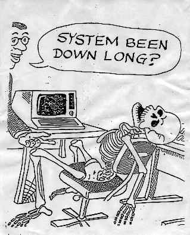

This system has been hacked by Suculent Duck....
Daily LYIT News
Today, Suculent Duck, the most feared vandal in Irish Computer Networks
compromised the main website of LYIT college using an elite unknown exploit.
Using this highly advanced technique of overthrowing systems,
Suculent Duck managed to steal passwords, read stupid students e-mails and look
through teachers porn collections and generally run the network.
Today this picture of the LYIT admin, similar to destructive damage carried
out on our counterpart website
here
Was taken...

SHOUTZ AND GREETZ TO PIMPSHIZ, HACKWEISER, KID B, KILLER PEPE, AC|DKLOWN, EVIL ANGELICA, PR0PHET, ONTARO, BAD CARRILLA, DIAMOND PETE, BUTTFUCKER SCABBY, DHC(DUMBASS HACKING CORPORATION), ELEET KRU, CHICKEN KEBAB
ADMIN, YOU'VE BEEN OWNED BY SUCULENT DUCK, HOW DOES THAT MAKE YOU FEEL? PRETTY USELESS I'LL BET..GO AND EAT DICK AS YOUR PUNISHMENT, AND SOME SHIT TOO....*GRIN*

Website design by Suculent Duck 2001